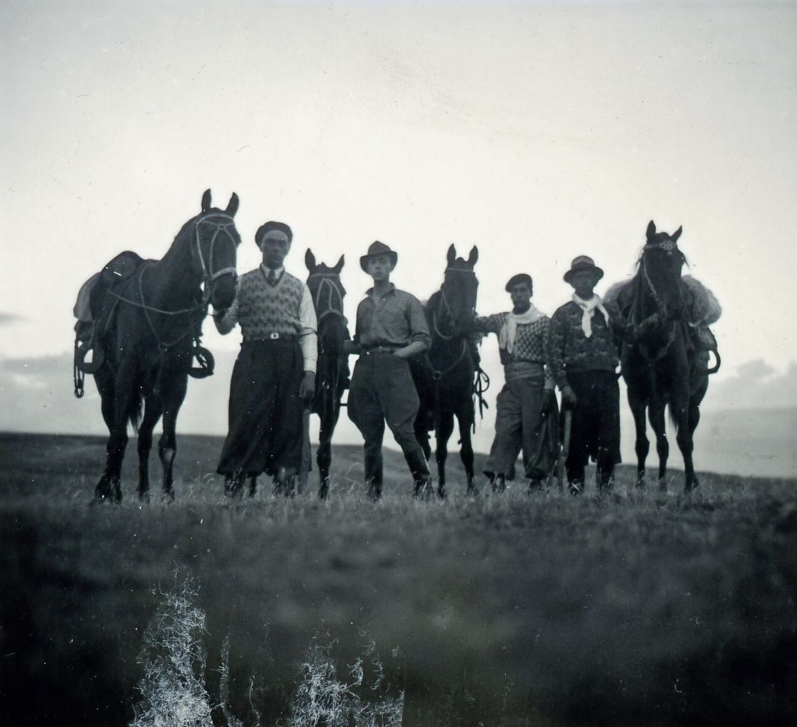
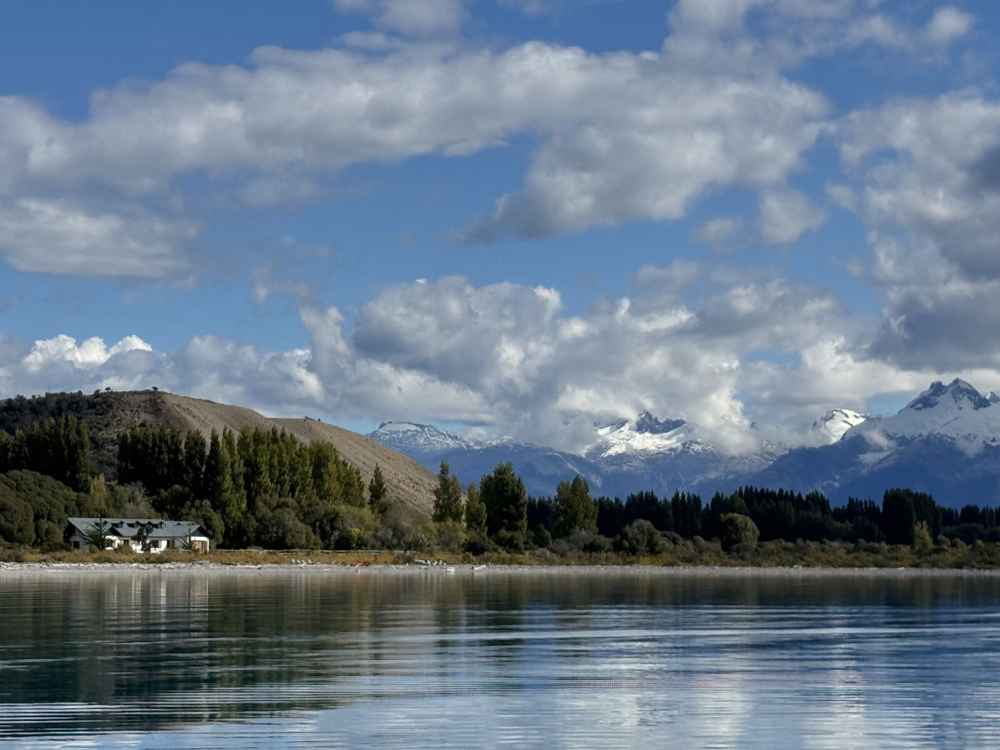
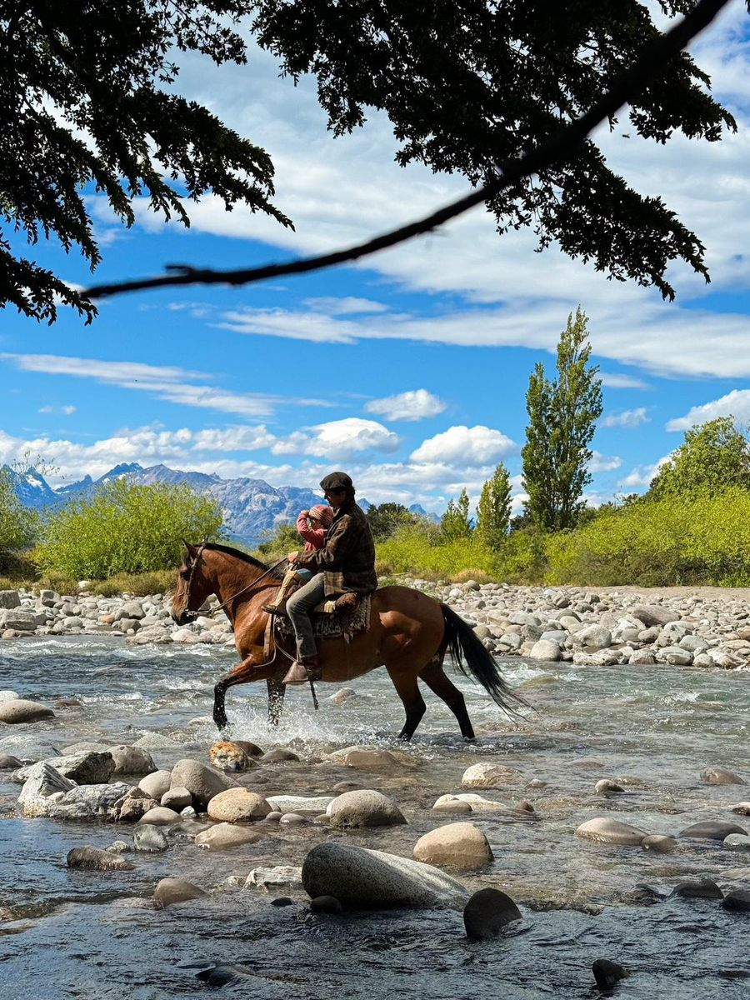
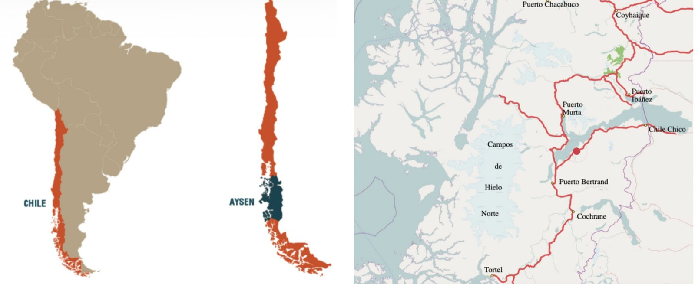

Nuestra Historia
Una historia de viajes, voluntad y encuentro con un territorio que transforma. A caballo, por agua y aire, así fue la colonización de Aysén.
Nunca pensé que viviría para ver caminos en nuestra región
Atilio Cosmelli

Estancia
La Naviera es un lugar histórico y familiar; desde las aguas del General Carrera se soñó la tierra, luego se plantaron álamos, se hicieron canales y potreros, se levantaron casas y puestos, años después el hombre Gaucho cuidaba el ganado. Hoy nos toca cuidar ese tesoro, cargado de amor, de historia y recuerdos; en una naturaleza dominante y mágica.
Bienvenidos

Una historia de viajes, voluntad y encuentro con un territorio que transforma. A caballo, por agua y aire, así fue la colonización de Aysén.
Nunca pensé que viviría para ver caminos en nuestra región
Atilio Cosmelli

Nuestras experiencias y actividades son lo que por años hemos ido haciendo. Desde navegar y sentir la inmensidad del General Carrera, hasta adentrarse en los bosques mágicos y pisar las piedras del escoreal. A caballo, caminando o navegando, hacemos lo que sabemos y por regalo recibimos.
Saber más
Región de Aysén, ribera sur del Lago General Carrera, entre los Campos de Hielo Norte y el Parque Nacional Patagonia.
Un lugar remoto donde la naturaleza es la principal protagonista.


Fuiste pionera heroica en las soledades inmensas de Aysén, gozando y padeciendo en elsosiego mortal de la nieve y en la tragedia inútil de los vientos, compartiendo junto a tumarido tantas jornadas de dulzura y también de desolación.Atilio Cosmelli a Luz Pereira el día de su partida, 27 de diciembre de 1979